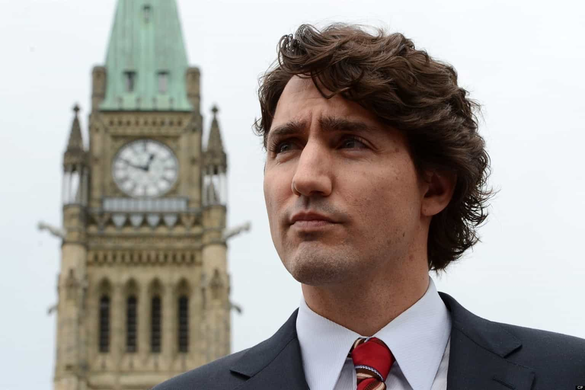

< < < Back
Canada’s Gamergate-Hating Prime Minister Learned Feminism From His Gold-Digging Mother – Return Of Kings
The things we see online, whether it is issues like Gamergate, or video games misogyny in popular culture, it is something that we need to stand clearly against.
— Justin Trudeau, the newly elected Prime Minister of Canada
In yet another sign that we may as well replace many democracies with monarchies led by champagne socialists, the liberal, extraordinarily privileged, and “I can be anything to everyone” son of a former Canadian Prime Minister has now become Prime Minister himself.
Justin Trudeau has a truly atrocious ideology, including taking potshots at Gamergate as he talks about how his unaccomplished, famous-by-spreading-her-legs mother raised him to be a feminist. With promises of huge budget deficits and making up for nine years of his Liberal Party being out of government, Trudeau’s win marks the most diabolical political shift in Canadian history.
For nearly a decade, Canada had put its trust in the Conservative Stephen Harper, an affable half-technocrat, half-kind uncle with an economics degree. This was an achievement, as Canadians have been fed a leftwing political diet of “The government can give you everything you want” for about a century. Now they have reverted back to Canada’s traditionally dominant Liberals, led by Trudeau, whose former profession as a high school teacher says more about his ability to excite a kind of national classroom (especially with his appearance) than actually build the school or run it.
His mother, a tabloid-seeking, leg-spreading gold-digger and drug smuggler, taught him about feminism
Yes, Yes. I am a feminist. Proud to be a feminist. My mom raised me to be a feminist.
— Justin Trudeau describing the woman most famous for marrying a Canadian Prime Minister and talking about how she cheated on him with Ted Kennedy.

Rocker Mick Jagger once described Margaret Trudeau as a “very sick girl,” alluding to her pathological interest in high-status men besides her husband Pierre.
I have no personal animosity towards the mother of this new Prime Minister, who is also the ex-wife of the late Prime Minister Pierre Trudeau. But Margaret Trudeau is no one to celebrate. She perfectly encapsulates how women marry into fame, wealth or status and then derive everything they have from that marriage (and the man they marry).
Trudeau junior’s mother met his father when she was just 18, a few years before his first stint as Prime Minister. She married when she was 22 and her groom was 52. Pierre, a notoriously hard worker regardless of what you might say about his policies or ideology, had spent his life eking towards the profile and station that Margaret could reap the rewards of immediately. Exactly what Margaret could teach Justin about feminism is a complete mystery, other than fucking your way into high society.
Befitting her complete lack of experience in life, Margaret hated how her husband had to work so often, as if she was somehow hard done by with the life of privilege virtually no one ever gets and those who do must spend their lifetime waiting for (after their own hard work, too). She hid drugs in the Prime Minister’s travel bags, destroyed a piece of artwork she didn’t like in Pierre’s official (and publicly paid for) residence, and fucked Ted Kennedy, among others.
It is impossible to find anything about her remotely worth emulating. Tragically, she makes Princess Diana look like a self-made heroine of the ages. When the Trudeaus finally divorced, Margaret discovered (shock horror!) that she didn’t have the requisite skills to forge an alternative career. So, instead, she gave exclusive interviews about her domestic life and juicy details about her adulterous and other sexual liaisons. She repeated this high-brow process by becoming an author, not about female trailblazing but female sexual activity as a means of social mobility.
Justin Trudeau also threw two uncharged and non-convicted male colleagues under the bus

“Is it time to pander to the female vote by throwing two uncharged, non-convicted guys out yet?”
Those familiar with my earliest ROK articles might remember my excoriation of Trudeau for his white knight expulsion of two formerly Liberal members of the Canadian House of Commons, Scott Andrews and Massimo Pacetti, from his party. Both men were roasted over the fire of an unparalleled witch-hunt for months and their political careers have been all but destroyed.
Two female members of the left-of-center New Democratic Party claimed they were victims of sexual assault at the hands of Andrews and Pacetti. In Pacetti’s case in particular, the stigma he faced was truly Orwellian. The female politician he had sex with had handed him a condom.
Of course, if this tidbit of providing a condom had not been known, there remained no objective evidence to even possibly quarter-prove that the alleged assaults took place, undermining Trudeau’s shocking decision to expel. Unsurprisingly, Andrews and Pacetti, who have not had the most basic police report filed against them, let alone been convicted by a court (including those observing a watered-down standard of proof–aka female testimony–never found in other categories of criminal trials), had their names and supposed actions paraded across the Canadian media.
The accusers, however, were granted typical anonymity and conveniently said they were “re-victimized” by having the story go public. As usual, this is another way to avoid proper, objective examination of grossly unchallenged claims.
When perpetuating a dynasty means more than governing the country
Trudeau’s trying to be this guy.
It’s no secret that enough Canadians hated fiscal rectitude for Stephen Harper and his friends to have the reins of power stripped from them. Meanwhile, Justin Trudeau has appealed to every clichéd or mainstream leftwing ploy (most notably the wage gap farce and supposedly entrenched Canadian racism) and then some of the even battier SJW talking points, such as Gamergate.
Throughout it all, he has raised his heavily sluttified and now thankfully mummified but living mother to some kind of feminist sainthood. She has no personal achievements worthy of national mentioning and nothing but a lifetime of fame only by marriage, sex, and pregnancy with high-ranking men.
Like an D-grade version of the already discredited Camelot fantasy of JFK in the United States, Justin Trudeau will project any image he can to paint himself as Canadia’s liberal savior. And for that reason Canada should be deeply, deeply scared.
Read More: 7 Pictures That Show Women With Rich Men Is About More Than Gold Digging